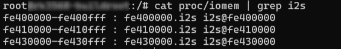
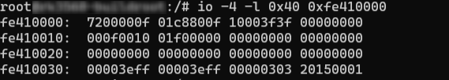
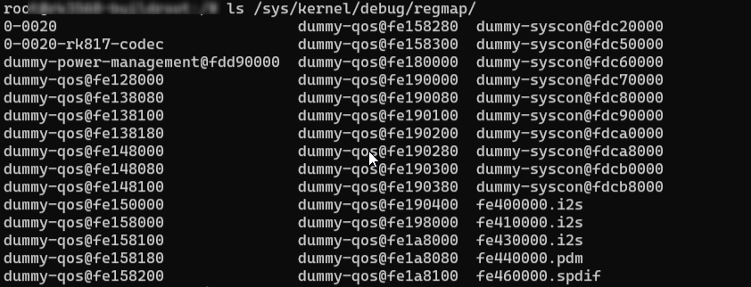

Linux-Kernel驱动调试
--- echo 0 > /proc/sys/kernel/sysrq 关闭 1开启 内核日志
DMESG
---dmesg指令打印的内容只与kernel相关，它的log源于内核缓冲区
//实时监控dmesg日志输出信息
[root@RedHat_test ~]# watch "dmesg | tail -20"
//输出dmesg至文档
dmesg > xx.log
==> exit后adb pull xx.log C:\Users\xxxxx
GPIO
//查看gpio信息
cd sys/kernel/debug
cat gpio
# 使能引脚GPIO1_C4
echo 52 > /sys/class/gpio/export
# 设置引脚为输入模式
echo in > /sys/class/gpio/gpio52/direction
# 读取引脚的值
cat /sys/class/gpio/gpio52/value
# 设置引脚为输出模式
echo out > /sys/class/gpio/gpio52/direction
# 设置引脚为低电平
echo 0 > /sys/class/gpio/gpio52/value
# 设置引脚为高电平
echo 1 > /sys/class/gpio/gpio52/value
# 复位引脚
echo 52 > /sys/class/gpio/unexport
GPIO被占用会报错，可能这个个引脚已被使用，需在设备树中自行查找
input事件
--- 查看linux下事件
# 查看总共有几个事件
ls /dev/input/
# 查看event对应的设备信息
cat /proc/bus/iio/devices
# 直接读取事件的输入
cat /dev/input/event4
# evtest
ADC
--- 一般ADC接口有两种：温度传感器，逐次逼近ADC
# TS-ADC(Temperature Sensor)：支持两通道，时钟频率必须低于800KHZ
# SAR-ADC(Successive Approximation Register)：支持六通道单端10位的SAR-ADC，时钟频率必须小于13MHZ。
# 获取所有的ADC值
cat /sys/bus/iio/devices/iio\:device0/in_voltage*_raw
==> 逐次逼近ADC：1.8v上拉，10位采样率，因此读出来的值为1024,实际电压计算公式：Vresult = (1800mv * 读出来的值) / 1023;
UART-串口
| 串口 | 功能 |
|---|---|
| TXD | 发送信号线 |
| RXD | 接受信号线 |
# 检查串口设备是否成功使能
ls /dev/tty*
FAN
# 查看风扇状态
cat /sys/class/thermal/cooling_device0/cur_state
I2C
# 查看i2c总线是否开启
ls /dev/i2c-*
I2C-TOOLS
--- 适用于挂载在I2C上的设备（例如某些挂载在i2c上的codec）
参数y：关闭交互模式，使用该参数时，不会提示警告信息。
参数a：扫描总线上的所有设备。
参数q：使用SMBus的“quick write”命令进行检测，不建议使用该参数。
参数r：使用SMBus的“receive byte”命令进行检测，不建议使用该参数。
- i2cdetect
# 检测当前系统有几组I2C总线
i2cdetect -l
# 查看指定I2C3总线的挂载情况
i2cdetect -a 3
i2cdetect -r 3
i2cdetect -y 3 //如显示i2c3的挂载情况
- i2cdump
# i2cdump 读取指定设备上的全部寄存器的值
i2cdump -y(自动执行yes) -f 0 0x30 //读取I2c0总线上0x30地址里面的数据
- i2cget
# 查询单个寄存器值
# 读取指定IIC设备的某个寄存器的值，如下读取I2C0地址为0x30器件中的0x01寄存器值。
i2cget -f -y 0 0x30 0x01
- i2cset
# 修改单个寄存器值
# 写入指定IIC设备的某个寄存器的值，如下设置I2C0地址为0x30器件中的0x01寄存器值为0x02；
i2cset -f -y 0 0x30 0x01 0x02
IO命令
--- 适合SOC寄存器查询
# 例如查询SOC上的I2S
cat proc/iomem | grep i2s
# 查询fe41000的寄存器值
io -4 -l 0x40 0xfe4100000
// -1|2|4 Sets memory access size in bytes (default byte)


regmap
ls /sys/kernel/debug/regmap/
cat /sys/kernel/debug/regmap/0-0020-rk817-codec/registers

SPI
| SPI | 功能 |
|---|---|
| MOSI | 主设备输出/从设备输入 |
| MISO | 主设备输入/从设备输出 |
| CLOCK | 时钟信号线 |
| CS0 | 片选信号线0 |
| CS1 | 片选信号线1 |
# 检查SPI设备
ls /dev/spi*
PWM设备
# 查看pwm是否开启
ls /sys/class/pwm/
示例：
pwm1->pwmchip1
pwm5->pwmchip2
pwm7->pwmchip3
==> 操作PWM
# 将指定pwm导出到用户空间
echo 0 > /sys/class/pwm/pwmchip1/export
# 设置pwm周期 单位为ns
echo 1000000 > /sys/class/pwm/pwmchip1/pwm0/period
# 设置占空比
echo 500000 > /sys/class/pwm/pwmchip1/pwm0/duty_cycle
# 设置pwm极性
echo "normal" > /sys/class/pwm/pwmchip1/pwm0/polarity
# 使能pwm
echo 1 > /sys/class/pwm/pwmchip1/pwm0/enable
# 取消将pwm3导出到用户空间
echo 0 > /sys/class/pwm/pwmchip1/unexport
Interrupts 中断信息
//查看Linux内核的中断信息
cat /proc/interrupts //这个主要是硬件中断信息
==>hp-det-gpio = <&gpio4 RK_PA4 GPIO_ACTIVE_LOW>; 耳机设置后会看到headset中断
中断号 CPU0 CPU1 CPU2 CPU3使用次数 中断名字
119: 0 0 0 0 rockchip_gpio_irq 4 Edge headset_detect
cat /proc/softirqs //软中断
cat /sys/kernel/irq/xxx //可以看到具体的中断信息
音频功能调试-Linux
--- Linux 使用alsa；Android使用tinyalsa
- Lingx 音频调试方法
# 查看当前已注册的声卡
cat /proc/asound/cards
# 查询音频时钟，确认时钟设置是否正确
cat /sys/kernel/debug/clk/clk_summary | egrep "i2s1|pll"
# 获取录音设备
aplay -l
# 获取录音设备
arecord -l
# 查看声卡驱动目录
ls /dev/snd/
# 列出可以控制card 1的控制器
amixer controls -c 1
# 列出所有card 1控制器能配置的值
amixer contents -c 1
# 查看声卡0控制器2的可配置的值
amixer -Dhw:0 cget numid=2
amixer -c 0 cget numid=2
# 设置声卡0控制2的值为3
amixer -Dhw:0 cset numid=2 3
amixer -c 0 cset numid=2 3
# 图形化查看当前信息
alsamixer
# 指定声卡0播放音频文件
aplay -D hw:0 test.wav
aplay -c 0 test.wav
# 使用声卡0，cd音质，录制10s
arecord -f cd -Dhw:1 -d 10 test.wav
# 使用card 1录制并使用card 1进行播放
sudo arecord -f cd -Dhw:1 | aplay -Dhw:1
-
后续补充alsaloop、play、pacmd、pluseaudio指令
-
-Dhw:0,0详解
- 第一位0是指定0声卡，第二位0是指定设备0；实际完整命令如：aplay -Dhw:0,0 test.wav；
-
-Dhw:0,0 和 -Dplughw:0,0的区别
-
hw：是直接访问硬件
-
plughw：是经过采样率和格式转换的插件
= =>如RK平台，录播都是仅支持2ch，如果直接使用hw:0,0播放mono文件则会报错：Channels count non available；只能使用stereo；
但是可以使用plughw:0,0的方式播放mono文件
- 录音也可以使用plughw:0的方式录制mono格式的音频
= => plughw:0 很好用
音频功能调试-Andorid
自定义log打印
/* Debug */
#if 1
#define DBG(x...) printk(x)
#else
#define DBG(x...) do { } while (0)
#endif
#ifdef CONFIG_SND_DEBUG
#define DBG(args...) pr_info(args)
#else
#define DBG(args...)
#endif
dtb反编译
# fdtdump工具
sudo apt-get install device-tree-complier
# 反编译
fdtdump xxx.dtc > xxx.dts